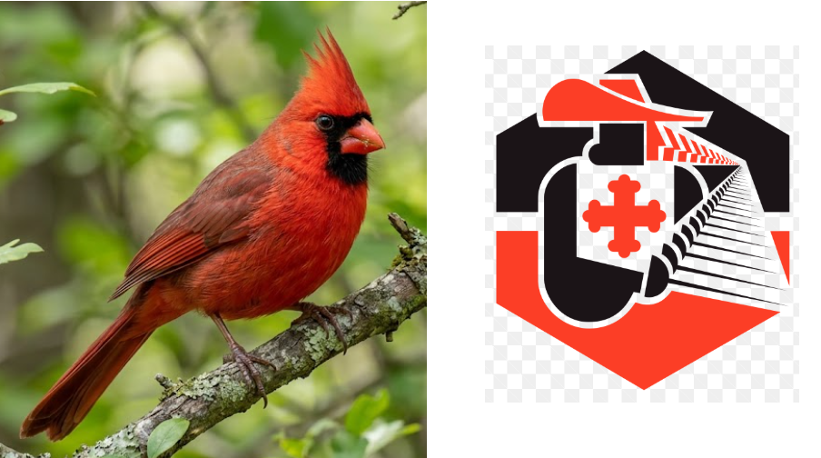

Pour cette fin d’année, vous allez (re)passer votre bac option Histoire de France, en visitant Paris…
20 énigmes … ça tombe bien il y a 20 arrondissements à Paris !
1 petite énigme avec 2 images-indices pour chaque arrondissement et une voie (rue / avenue / …) à y trouver, portant un nom qui a fait l’Histoire de France.
Pour chaque réponse, vous partez de l’URL de départ, complété de la réponse proposée : https://noel-2026.pages.dev/XX-reponse
Chaque page donnera une briève (variante historique de "brève" !) explication de la réponse avec l'énigme suivante.
Comme d’habitude, les blancs ou apostrophes éventuels sont remplacés par des « - », et pas d’accent, ni d'éventuels article/particule devant.
Vous pouvez vous mettre en équipe jusqu’à 4-5 si vous voulez, pour jouer jusqu’au 10 décembre.
En cas de blocage, vous pouvez demander de l’aide à F.Monino.
La dernière réponse sera à donner à Naïma pour valider votre 20/20 et recevoir le petit cadeau :
un cagnottage de 20€ aux 15 premiers, 15€ à 10 tirés au sort parmi les suivants (à utiliser avant le 01/04/2027).
Voici la 1ère énigme, avec une réponse à ajouter à l'url ainsi "/01_xxxxx"

Le CSE